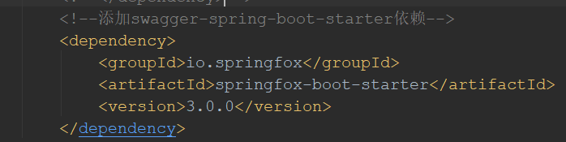

Swagger目的，干什么
解决前后端的接口文档冲突。自动生成接口文档和客户端服务端代码，做到调用端代码、服务端代码以及接口文档的一致性。
这套规范，你只需要按照它的规范去定义接口及接口相关的信息。再通过Swagger衍生出来的一系列项目和工具，就可以做到生成各种格式的接口文档，生成多种语言的客户端和服务端的代码，以及在线接口调试页面等等。
作为Java届服务端的大一统框架Spring，迅速将Swagger规范纳入自身的标准，建立了Spring-swagger项目，后面改成了现在的Springfox。通过在项目中引入Springfox，可以扫描相关的代码，生成该描述文件，进而生成与代码一致的接口文档和客户端代码。这种通过代码生成接口文档的形式，在后面需求持续迭代的项目中，显得尤为重要和高效。
Swagger资源
swagger注释和文档API指南（擎宇）：https://github.com/Yangqyloki/knowledge-base/issues/15
swagger开源工具：https://swagger.io/irc/
Swagger怎么用：
springboot引入Swagger
1、pom.xml加依赖
pom.xml文件添加对Swigger的依赖，此处用springfox。刷新maven包，下载Swagger依赖包。

2、主函数加@EnableSwagger2注解

3、application.properties参数配置
一般情况修改swagger.base-package即可，切换到自己的package路径下。
更多配置文档说明见官方说明：
https://github.com/SpringForAll/spring-boot-starter-swagger

4、启动springboot，查看接口文档
通过http://localhost:8000/swagger-ui/index.htm查看接口文档